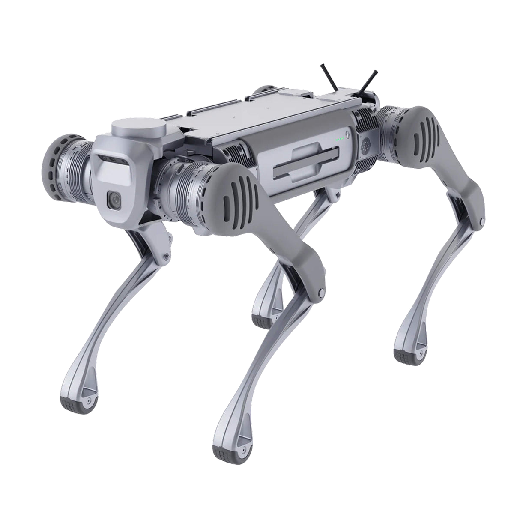

Chi cerca il prezzo di un cane robot di solito sta valutando un quadrupede per un laboratorio, un'azienda o una demo, e si trova davanti due categorie che non vanno confuse: i giocattoli telecomandati e i quadrupedi veri. Qui parliamo dei secondi, i modelli Unitree che seguiamo come parte della filiera Unitree Italia. I prezzi partono da 2.990 euro IVA esclusa (Go2 Air) e arrivano a 100.771 euro (B2-W con LiDAR), secondo il listino pubblico.
Cane robot, prezzo: la fascia da 2.990 a 100.771 euro
La gamma quadrupede Unitree si divide in quattro famiglie, ognuna con un compito preciso. Tutti i prezzi sono IVA esclusa.
| Famiglia | Ruolo | Prezzo (IVA escl.) | Carico utile | Protezione |
|---|---|---|---|---|
| Go2 | Didattica, consumer, sviluppo | 2.990 – 36.899,53 € | ~7–12 kg | nessun grado IP dichiarato |
| AS2 | Professionale ed education | 12.488,14 – 29.900 € | 10–15 kg secondo la versione | fino a IP54 (Air senza grado IP) |
| A2 | Industriale medio | 30.848,48 – 48.524,23 € | 25 kg | IP56 / IP67 |
| B2 | Industriale pesante | 76.076,94 – 100.771 € | oltre 40 kg | IP67 |
Le fasce riprendono il minimo e il massimo di ogni famiglia dal listino pubblico. Il listino completo, modello per modello, è su Listino prezzi e tutta la gamma è nella pagina quadrupedi. Il prezzo da solo non basta a scegliere: contano il carico utile, il grado di protezione e quello che puoi costruirci sopra.
Go2: la porta d'ingresso per didattica e sviluppo
Il Go2 è il quadrupede consumer/education della gamma. Pesa circa 15 kg con batteria e monta un LiDAR 4D L2 grandangolare, ma non ha un grado di protezione IP dichiarato: va bene per indoor, laboratori e demo, non per pioggia o polvere.
| Versione | Prezzo (IVA escl.) |
|---|---|
| Go2 Air | 2.990 € |
| Go2 Pro | 4.290 € |
| Go2 EDU | 10.990 € |
| Go2 EDU con LiDAR Livox Mid-360 | 17.490 € |
Il Go2 Air (2.990 euro) è il modello base, con 6 mesi di garanzia. Il Pro aggiunge il modulo di posizionamento vettoriale e la voce. L'EDU è la versione per sviluppo, con garanzia 12 mesi e accesso completo al SDK. Per mappare a 360° c'è la configurazione Go2 EDU con LiDAR Livox Mid-360, 17.490 euro. Il confronto tra i profili è in Go2 vs Go2 Pro. Nota: il Go2 non è un giocattolo, ma resta un consumer: se ti serve IP54 o più carico, passa alla AS2.
AS2: la fascia professionale, versione per versione
La serie AS2 occupa lo spazio tra il consumer e l'industriale. Attenzione ai numeri: non esiste una AS2 generica, le prestazioni cambiano per versione. Tutte pesano circa 20 kg con batteria e hanno 12 gradi di libertà.
| Versione | Carico in marcia | Velocità max | Protezione | Prezzo (IVA escl.) |
|---|---|---|---|---|
| AS2 Air | ~10 kg | 3,0 m/s | nessun grado IP | 17.900 € |
| AS2 Pro | ~13 kg | 3,7 m/s | IP54 | 29.900 € |
| AS2 X | ~15 kg | fino a ~5 m/s | IP54 | 13.240 € |
| AS2 EDU | ~15 kg | fino a ~5 m/s | IP54 | da 15.600 € |
I numeri vengono dalla pagina ufficiale As2. I valori di punta (circa 15 kg in marcia, IP54 e fino a circa 5 m/s) valgono per AS2 X ed EDU, non per tutta la serie: l'AS2 Pro porta circa 13 kg, ha IP54 e arriva a 3,7 m/s; l'AS2 Air si ferma a circa 10 kg e 3,0 m/s e non ha grado IP. La EDU esiste in quattro gradini (U1 Standard 15.600 €, U2 Smart 17.940 €, U3 Laser Mid360 22.640 €, U4 Flagship 24.990 €). Se devi scegliere, la guida Unitree AS2 in Italia entra nei dettagli.
A2 e B2: i quadrupedi industriali
Per gli ambienti veri (polvere, pioggia, temperature estreme) si sale a A2 e B2.
| Famiglia | Carico utile | Protezione | Prezzo (IVA escl.) |
|---|---|---|---|
| A2 (Standard → A2-W Pro) | 25 kg | IP56 (IP67 sui componenti core della Pro) | 30.848,48 – 48.524,23 € |
| B2 (→ B2-W con LiDAR) | oltre 40 kg | IP67 | 76.076,94 – 100.771 € |
L'A2 pesa circa 42 kg e cammina con 25 kg di carico (fino a 35 kg in condizioni ideali); la versione Pro porta il grado di protezione a IP56–IP67 sui componenti core. Il B2 pesa circa 60 kg, supera i 40 kg di carico in marcia e corre a più di 6 m/s con IP67: è il modello per ispezioni in impianti, cantieri e ambienti difficili. Vedi anche la guida quadrupede per ispezione industriale e le pagine Unitree A2 e Unitree B2.


Cane robot dei Carabinieri: cosa usano le forze dell'ordine
L'Arma dei Carabinieri usa un cane robot chiamato Saetta, assegnato al Nucleo Artificieri: presentato a Roma a dicembre 2023 e poi arrivato in Puglia, al Nucleo Artificieri di Bari, nel 2026. Secondo Radio Laser non è un robot Unitree ma un quadrupede Boston Dynamics. È un dato utile per non confondere le piattaforme: il quadrupede delle forze dell'ordine non fa parte della filiera Unitree e ha prezzi e fornitura propri.
Cane robot realistico o giocattolo? Come distinguerli
Nelle ricerche "cane robot giocattolo" e "cane robot realistico" si mescolano. Il criterio è semplice: il giocattolo è un dispositivo di plastica telecomandato, senza SDK, senza LiDAR, senza protezione, da poche decine di euro. Il quadrupede vero ha carico utile misurabile (oltre 40 kg sul B2), un LiDAR per navigare, ROS/ROS 2 e SDK per programmarlo, e un grado IP su A2 e B2. Se il prezzo è sotto i 1.000 euro, quasi sempre è un giocattolo.
Domande frequenti
Quanto costa un cane robot?
Un quadrupede Unitree parte da 2.990 euro IVA esclusa (Go2 Air) e arriva a 100.771 euro (B2-W con LiDAR). La fascia professionale AS2 va da 12.488 a 29.900 euro; gli industriali A2 e B2 da 30.848 a 100.771 euro.
Che differenza c'è tra un cane robot giocattolo e uno professionale?
Il giocattolo è un dispositivo telecomandato con quattro zampe, senza SDK e senza protezione da polvere o acqua. Un quadrupede Unitree ha carico utile reale (oltre 40 kg sul B2), LiDAR 4D, ROS/ROS 2 e SDK, e grado di protezione IP56/IP67 sui modelli industriali.
Cosa usano i Carabinieri?
L'Arma dei Carabinieri usa Saetta, un quadrupede assegnato al Nucleo Artificieri. Non è un robot Unitree: secondo la stampa locale che lo ha descritto si tratta di un quadrupede Boston Dynamics.
Quale cane robot scegliere per università o laboratorio?
Go2 EDU (10.990 euro) o AS2 EDU (da 15.600 euro): SDK ROS/ROS 2 e modulo di calcolo NVIDIA Jetson Orin. Con LiDAR Livox Mid-360 il Go2 EDU costa 17.490 euro.
Quale cane robot per ispezione industriale?
A2 (IP56, 25 kg di carico) per impianti semi-outdoor, B2 (IP67, oltre 40 kg) per cantieri e ambienti difficili. AS2 Pro (IP54) copre sorveglianza indoor e perimetrale.
Fonti
- Unitree, pagina Go2 (specifiche): unitree.com/go2
- Unitree, pagina As2 (tabella parametri per versione): unitree.com/As2
- Unitree, pagina A2: unitree.com/A2
- Unitree, pagina B2: unitree.com/b2
- RaiNews, «Saetta, cane robot dei Carabinieri» (dicembre 2023): rainews.it
- Radio Laser, Saetta (Boston Dynamics) al Comando provinciale Carabinieri di Bari (3 giugno 2026): radiolaser.it